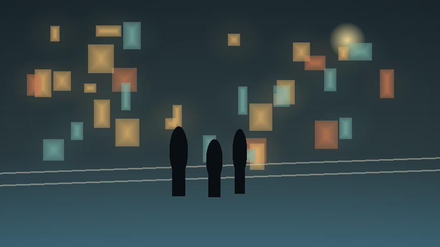

自我价值
解释剧名里的“无价值感”如何成为人物共同面对的问题。
JTBC · 2026 · Human Drama
为韩剧《모두가 자신의 무가치함과 싸우고 있다》制作一个中文介绍网站。 这里还是 starter：请补足文案、视觉层次、人物线索和无剧透观看提示。

Overview
这部剧把镜头对准那些看似普通却被自我怀疑缠住的人：他们在朋友的成功、 亲密关系的缺口和职业道路的挫败里，反复确认自己是否还有价值。
请把这一段扩展为准确、克制的中文简介，并补充韩文原名、常见英文名、 主创信息和适合新观众的观看入口。
Emotional Threads
解释剧名里的“无价值感”如何成为人物共同面对的问题。
补充主角与电影行业、创作困境或人生停滞相关的介绍。
用无剧透方式说明人物之间怎样互相照见、支撑或刺痛。
Viewing Guide